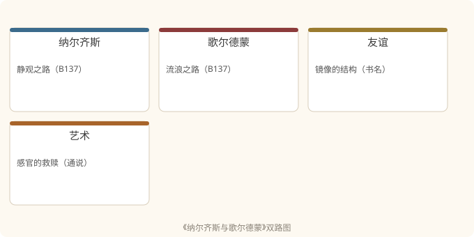

纳尔齐斯与歌尔德蒙
一、基本信息
| 作者 | 黑塞 |
|---|---|
| 成书/出版 | 1930年（Britannica B137：纳尔齐斯与歌尔德蒙 (1930)） Hermann Hesse — Encyclopaedia Britannica（百科全书） |
| 国别/地区 | 德国 |
| 时代 | 近代 · 20世纪30年代初 |
| 体裁 | 长篇小说 |
| 语言 | 德语 |

《纳尔齐斯与歌尔德蒙》双路图（主题·结构图）
二、创作背景
Britannica（B137）：纳尔齐斯与歌尔德蒙 (1930)——Britannica 列举。
Britannica（B137）：黑塞主题——'个人挣脱既定文明寻找精神自我'。
题材（通说待核）：修道院里的两个朋友——精神与感官的两条道路。
三、内容脉络
（通说待核——B137未载剧情）纳尔齐斯的静观之路与歌尔德蒙的流浪之路。
（通说待核）艺术与死亡：歌尔德蒙的木雕与终点。
四、主要人物表
| 人物 | 身份 | 说明 |
|---|---|---|
| 纳尔齐斯 | 修士/理性 | （B137 书名人物） |
| 歌尔德蒙 | 流浪者/感官 | （B137 书名人物） |
五、主题与艺术特点
- 精神与感官的双重道路（通说待核）。
- '挣脱既定文明'（B137）。
- 友谊的镜像结构（书名语境）。
六、影响与评论
- Britannica：1946诺贝尔文学奖（B137）。
Hermann Hesse — Encyclopaedia Britannica（百科全书） - Britannica：黑塞代表作序列（B137：《悉达多》《荒原狼》《玻璃球游戏》等）。
Hermann Hesse — Encyclopaedia Britannica（百科全书）
七、阅读建议
难点
- 中世纪修道院背景。
- '双重道路'的哲学结构。
- 《纳尔齐斯与歌尔德蒙》中译名（《纳尔奇斯与歌尔德蒙》）待核。
- 德文原版。
黑塞中期首选；与《德米安》对读。
八、待核实
- 1930年出版（S. Fischer说）待核。
- 剧情细节核对（通说）。
- 译名两说待核。